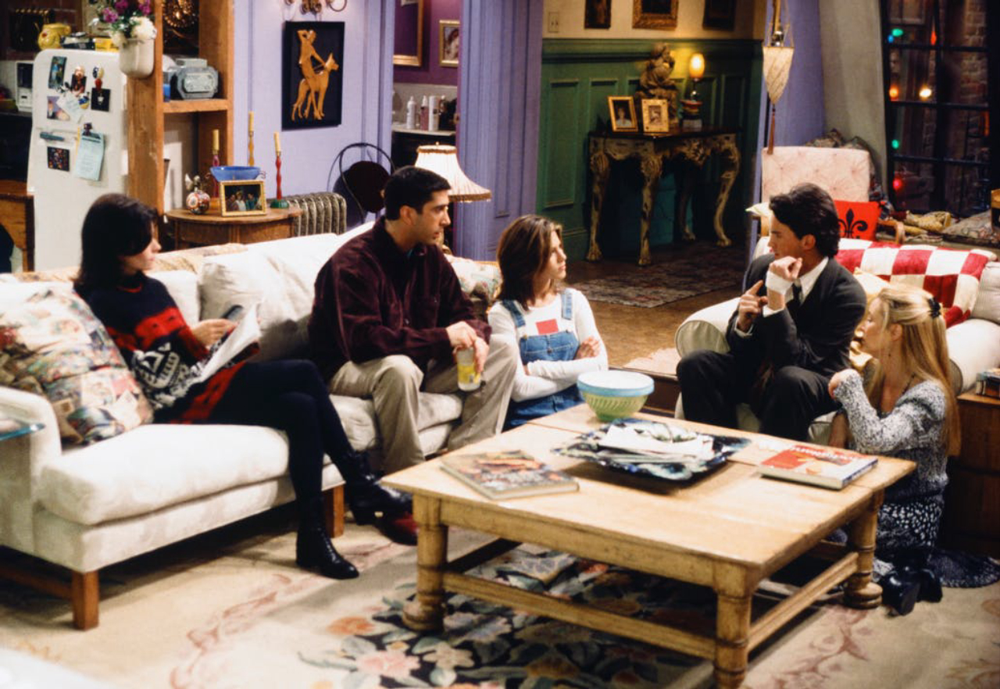
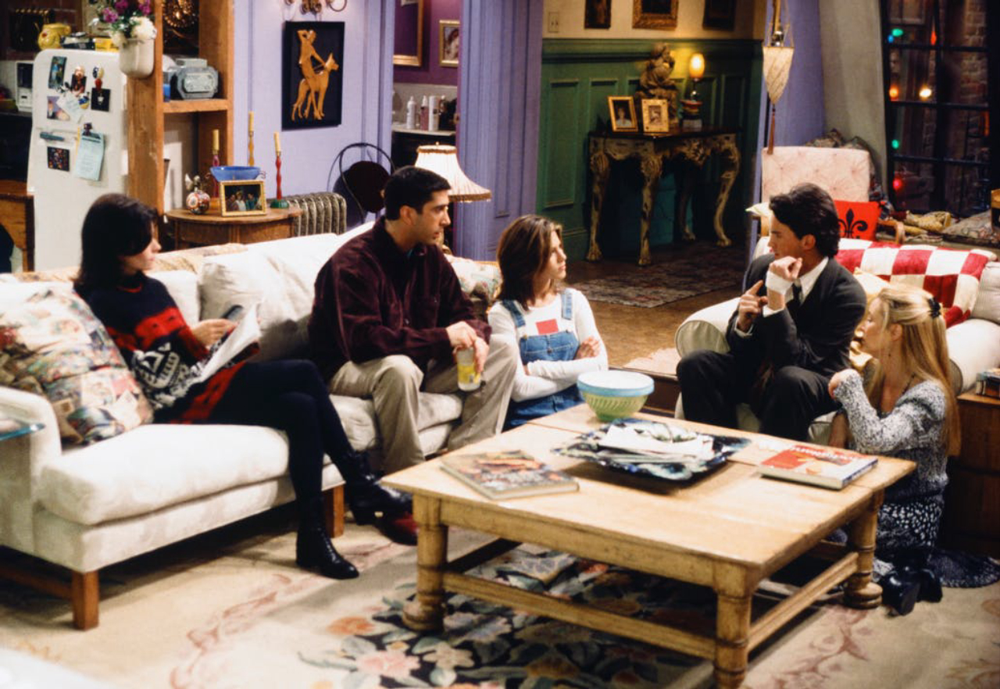

Sobre la serie
La serie fue creada por David Crane y Marta Kauffman, y protagonizada por Jennifer Aniston, Courteney Cox, Lisa Kudrow, Matt LeBlanc, Matthew Perry y David Schwimmer. A lo largo de diez temporadas, “Friends” conquistó al público por su humor inteligente, personajes entrañables y su retrato de la amistad en la adultez.
 


¿Por qué verla?
- Porque es un clásico que definió el humor de los años 90.
- Porque cada personaje tiene una personalidad única y adorable.
- Porque te hará reír, pero también reflexionar sobre la amistad y el paso del tiempo.
- Porque su banda sonora, su ambientación y sus frases siguen siendo parte de la cultura pop.
Mira un momento divertido de la serie:
Datos curiosos
- El icónico sillón naranja del Central Perk fue encontrado en el sótano del estudio de Warner Bros.
- Cada actor del elenco principal terminó ganando el mismo salario, marcando un precedente en la TV.
- El episodio final fue visto por más de 52 millones de personas solo en EE. UU.